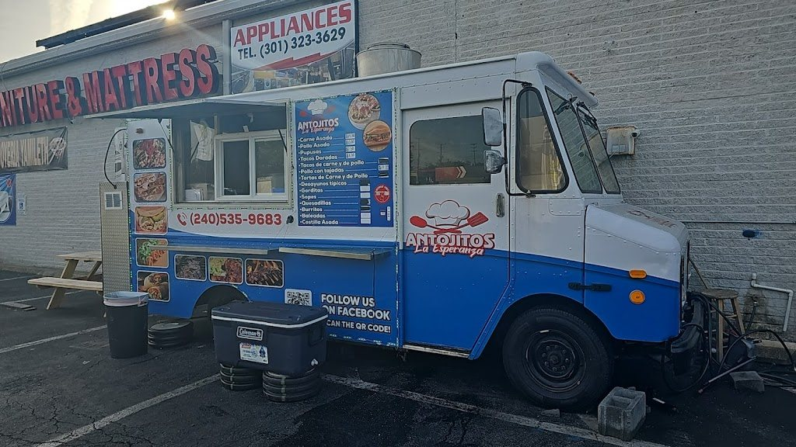

Your public profile
Give customers one reliable place to check your menu, photos, links, and contact details.
Unclaimed food truck profile
Antojitos La Esperanza has a Food Truck Finder preview for Laurel, Maryland. If this is your truck, claim the free profile and keep the details accurate. Until an owner verifies it, information on this page may be incomplete.

For the owner
Start with your email and mobile number. We’ll connect you to the exact listing when it is available, or help locate the right profile before anything is published.
Give customers one reliable place to check your menu, photos, links, and contact details.
Manage service locations and schedules so customers know where to find you.
We’ll explain any proof needed before owner changes are made public.